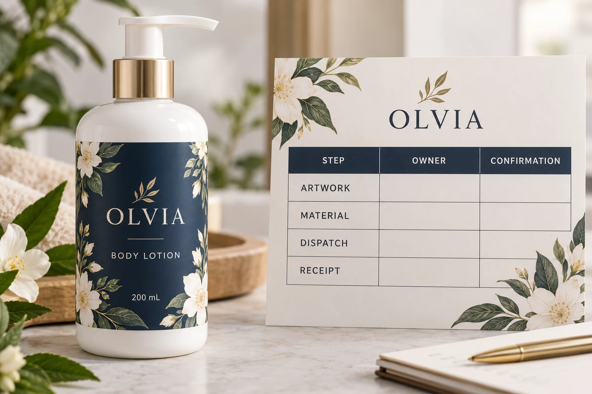

Define the date the site actually needs
Ask what the filling site's requested date means. Does it need labels at the gate, received into stock, reviewed by its packaging team or available beside the line? Identify the destination and the responsible receiving contact.
Record the relevant SKU mix and quantities. A partial arrival may or may not help the planned run; only the receiving team can confirm what it can use. Do not assume that dispatching one carton satisfies an all-versions requirement.
This first conversation can reveal that purchasing and the OEM have been using different milestones under the same phrase delivery date. Resolve that definition before compressing the schedule or selecting a shipping proposal.
Establish what starts the production estimate
Ask the supplier which inputs must be accepted before its proposed production period begins. These may include the final artwork, material arrangement and acknowledged job details. Obtain the actual dependencies rather than applying a generic list as a contractual promise.
The YT Labels shipping information says dispatch is confirmed after artwork, material and schedule review. The sample policy connects bulk production to final approvals. Those policies do not establish a universal number of days for every label order.
Have purchasing distinguish a request, an estimate and a confirmed arrangement. A quote supplied while artwork is incomplete should not silently become a reserved slot. Ask what has been confirmed and what remains conditional.
Build the timeline from receipt back to release
Use the receiving requirement as the endpoint. Ask the relevant parties to identify the preceding receiving review, transit, dispatch, production, material confirmation and artwork approval stages. Some activities may overlap where the parties confirm that they can; do not assume every dependency is either sequential or safely parallel.
Give each stage an owner and a status. An unconfirmed transit assumption is visible as an assumption, not a promised arrival. A material question belongs with the party who can resolve it, rather than becoming an unexplained delay allowance.
This method is especially useful when different suppliers own different stages. The label printer can acknowledge its proposed dispatch arrangement without guaranteeing a receiving site's internal review or every event along a transport route.
Use milestones that show the missing input
Complete this editorial worksheet for the actual job. Enter dates or durations only when their meaning and basis have been agreed.
| Milestone | Record | Question for the responsible owner |
|---|---|---|
| Usable stock required | Destination, versions, quantities and required state | What must be available for the filling plan? |
| Receiving review | Site's intake and acceptance steps | Who confirms stock can enter the planned operation? |
| Transit | Proposed route, assumption and confidence status | What remains subject to carrier or route conditions? |
| Dispatch | Supplier's acknowledged release point | Which inputs must be complete for this commitment? |
| Production | Proposed slot or duration and its starting condition | Is this estimated or actually confirmed? |
| Material | Identified construction and availability response | Does an unresolved choice affect the proposal? |
| Artwork | Final matched files and responsible approval | Which correction or approval is still pending? |
Work backward to find the latest needed input for each dependent step, using the parties' actual information. Then review forward: can the artwork owner, supplier and receiving site meet the resulting sequence? Where they cannot, record the tradeoff to resolve rather than calling the whole order urgent.

Compare options at the dependency that matters
In one hypothetical project, the material and final file are confirmed but transport arrangements remain open. Asking for an appropriate delivery proposal addresses that gap. Reopening the decorative design may add work without helping the missing route decision.
In another project, transit has been discussed but the brand has not released its corrected label text. A faster shipping option cannot complete that approval. The useful action is to identify the responsible reviewer and obtain the required file decision, then ask whether the remaining schedule is feasible.
A third option may be a deliberately revised filling plan or split requirement, if all relevant parties agree it is useful. Do not promise a partial shipment or assume the OEM can change its slot. Present the dependency and obtain the actual response.
Keep revisions visible after the first estimate
When artwork, material, quantity or destination changes, ask the supplier which milestone assumptions are affected. Keep the updated response beside the current job version. An earlier estimate should not remain the headline date after its underlying inputs have changed.
The storage-before-application guide helps plan stock that arrives ahead of use. Earlier delivery creates its own handoff requirement; it is useful only when the site can receive and store the intended supplies appropriately.
For custom cosmetic bottle labels, send the dimensions, artwork status, quantity by SKU, material direction and receiving destination. State the site's required in-hand condition and the filling dependency, then ask which production and dispatch milestones can be confirmed. Use the inquiry form to prepare a message and send files by email or WhatsApp; the form does not upload attachments. Keep requested dates and confirmed commitments separately identified so the next person can see what the schedule still needs.